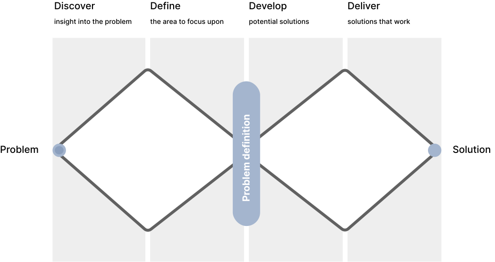
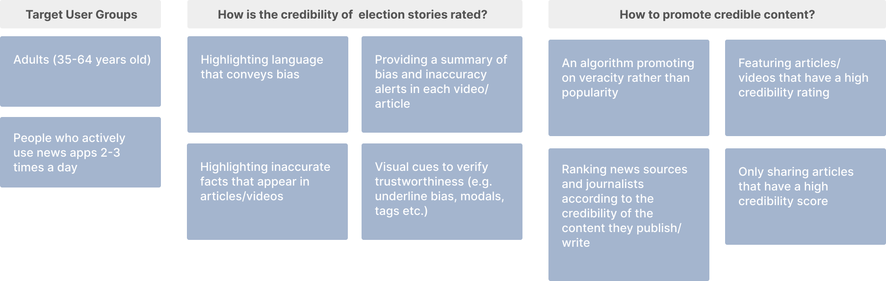
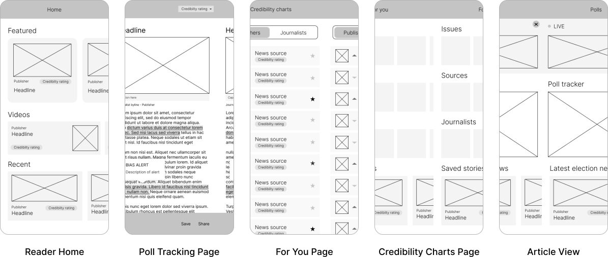

Creating a user-centric mobile-first experience that increases trust and credibility in election content
ADOBE CREATIVE JAM x NEW YORK TIMES — 3RD PLACE WINNER

Creating a user-centric mobile-first experience that increases trust and credibility in election content
ADOBE CREATIVE JAM x NEW YORK TIMES — 3RD PLACE WINNER
Project Brief
The Adobe
Creative Jam competition is aimed at inspiring designers to approach and design a solution for a given
challenge. Over the course of a week, I worked alongside another designer to create CredElection, a mobile
experience that increases trust and credibility in election content.
After pitching our solution to
a panel of industry experts, we were awarded 3rd place out of 300+
participants.
Design Process Overview
Discover insight into the problem
Election news is accessible today in ways that were unimaginable even just a decade ago. With the rise of
technology, sources, and outlets, it is becoming increasingly more challenging to know what political
information is reliable, credible, and what or who should be trusted.
Recent surveys reveal that the spread of misinformation and political bias within the news is a growing
issue:
The widespread of misinformation and political bias within media coverage of world events has encouraged readers to develop a sense of distrust when it comes to the credibility of news.
Define the area to focus upon
In order to narrow down the problem space, we realized that we had to get to know our user group by exploring who they were. Through user research, we identified specific user goals and pain points to help us understand how to tailor our solution to fit the problem.
Research into potential user groups yielded that a majority of news app users are individuals within the age group 35-64 years of age. These individuals are most likely to possess a higher level of education and to be the chief income earner in their household. Based on these statistics, we conducted user interviews with individuals that aligned with this user group to learn more about them.
Develop potential solutions
In our ideation session, we asked ourselves a series of crucial questions to help us understand exactly what issues we needed to address. Using these questions, we brainstormed a variety of different solutions.
Deliver solutions that work
We created a user flow diagram as a visual representation of the user’s journey as they interact with the product. By mapping out the user flow from the opening of the app to each screen, we gained a thorough understanding of what steps we needed to take in order to build out the final prototype.
Based on our user flow, we created low fidelity wireframes using Adobe XD.
CredElection
CredElection is a mobile experience designed for users seeking access to credible election content. Our solution addresses this need by filtering out news containing election misinformation while helping users detect areas of bias and inaccuracy within stories.
Link to prototype here
CredElection first brings the user to the home page where the user can quickly view featured stories, videos, recent news, and the most credible publishers and journalists.
Each article is analyzed and assigned a credibility rating. Opening up an article allows the user to view
a summary detailing the areas of bias and inaccuracy. Scrolling through the article allows you to view the
exact locations of detected bias and inaccuracies to provide the user with more context.
In
addition, an article can be saved for future perusal and can be shared if its credibility rating is
greater than 70%.
The “Top Charts” tab allows users to browse through the current rankings for publishers and journalists. These rankings are based on the credibility ratings of the content written and published by these sources. Users can also use this screen to follow their favourite publishers and journalists.
The “For You” tab allows users to view and manage certain issues, news sources, and journalists that they are interested in. This screen also gives users access to articles and videos that they have saved.
The “Polls” tab gives users the opportunity to access updated polling information from trusted sources, view the latest election news and receive live election results on the day of the election.
Reflection
When conducting research into the problem space, I found that it was important for me to take the time to thoroughly explore the issues with misinformation and bias in election content since it was a space that I didn’t have much experience with. It was important for me to develop a deep understanding of the issues that we wanted to solve in addition to the specific user groups affected by these problems in order to create a solution that accurately addressed the problems.
The next step for CredElection would be to conduct usability testing sessions to understand how users interact with the application as well as helping us identify areas that could be improved upon.